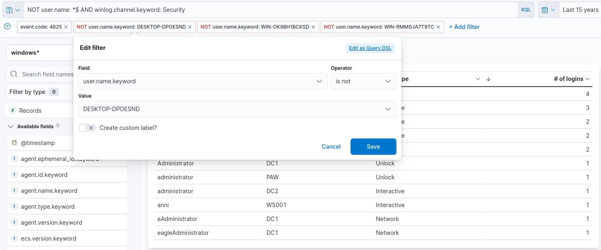

Introducción
Este módulo forma parte del path de estudios para la certificación CDSA (HTB Certified Defensive Security Analyst). Proporciona una visión general sobre el funcionamiento de un Security Information and Event Management (SIEM) y el ecosistema de Elastic Stack.
Además, aborda el funcionamiento esencial de un Security Operations Center (SOC), explora la aplicación de MITRE ATT&CK framework en los procesos operativos y profundiza en el desarrollo de querys utilizando Kibana Query Language (KQL).
Con un enfoque práctico, el módulo propone la creación de casos de uso y visualizaciones en Elastic Stack, desarrollando habilidades esenciales para enfrentar los desafíos reales en el ámbito de la ciberseguridad.
¿Qué es Elastic Stack?
Elastic Stack, también conocido como ELK Stack, es un conjunto de herramientas open-source desarrollado por Elastic que permite la recolección, análisis y visualización de datos. Es ampliamente utilizado para log management, monitoreo, análisis de seguridad y análisis de datos en tiempo real. Está compuesto por tres componentes principales: Elasticsearch, Logstash y Kibana.
La arquitectura de alto nivel de la Elastic Stack se puede mejorar en entornos de uso intensivo de recursos con otros componentes como Kafka, RabbitMQ y Redis.
Componentes
Elasticsearch
Elasticsearch es un motor de búsqueda, análisis y almacenamiento de datos open-source. Sus características principales son:
Motor de búsqueda distribuido
- Almacena datos en formato JSON y los organiza en un clúster distribuido.
- Permite búsquedas rápidas y escalables, incluso en grandes volúmenes de datos.
- Al ser distribuido, podemos agregar más nodos al clúster para manejar más datos y mejorar el rendimiento.
- Los datos se dividen en shards (fragmentos), que se replican para garantizar redundancia y alta disponibilidad.
Búsqueda en tiempo real
- Permite realizar consultas y obtener resultados casi instantáneos, lo cual es ideal para casos de monitoreo, análisis y búsquedas interactivas.
Flexibilidad con JSON
- Los datos se almacenan y procesan en formato JSON, lo que facilita la integración con APIs y sistemas modernos.
API RESTful
- Interactuar con Elasticsearch es sencillo gracias a su API RESTful, que utiliza HTTP para enviar y recibir datos.
Logstash
Logstash es responsable de recopilar, transformar y transportar datos de diversas fuentes hacia un destino, como Elasticsearch. Logstash opera en tres áreas principales:
-
Process input: Logstash soporta una amplia variedad de entradas. Puede recibir logs a través de diferentes input methods, como archivos de logs, bases de datos, sistemas de mensajería (Kafka, RAbbitMQ), sistemas de monitoreo, mensajes de syslog, etc.
Ejemplos de input plugins:
- file: para leer archivos locales.
- tcp o udp: para capturar datos de red.
- http: para consumir APIs.
- beats: para recibir datos de agentes Beats.
-
Transform and enrich log records: Permite transformar los datos mediante plugin filters que limpian, enriquecen y estructuran la información antes de enviarla al destino. Se pueden realizar tareas como eliminar campos innecesarios, dividir cadenas de texto en partes más pequeñas, convertir formatos de fechas, aplicar expresiones regulares para extraer información, etc.
Ejemplos de plugin filters:
- date: para estandarizar formatos de fecha.
- mutate: para modificar o convertir campos.
- geoip: para agregar información geográfica basada en direcciones IP.
-
Send log records to Elasticsearch: Logstash utiliza output plugins para transmitir log records a Elasticsearch. Estos plugins permiten enviar los datos transformados de manera eficiente y en tiempo real, asegurando que estén listos para ser indexados y analizados en Kibana.
Kibana
Kibana funciona como herramienta de visualización para documentos de Elasticsearch. Es la interfaz gráfica del Elastic Stack. Los usuarios pueden ver los datos almacenados en Elasticsearch y ejecutar querys a través de Kibana. Ofrece gráficos interactivos, dashboards personalizables, y funcionalidades avanzadas para trabajar con datos estructurados y no estructurados en tiempo real.
Beats
Son un componente adicional de Elastic Stack. Es una colección de agentes ligeros que recopilan y envían datos de diferentes orígenes a Elasticsearch o Logstash.
Los Beats son pequeños programas que se ejecutan en servidores, máquinas virtuales, contenedores, dispositivos IoT, o cualquier entorno donde se generen datos. Su objetivo es recopilar estos datos y enviarlos directamente a Elasticsearch o a Logstash para procesamiento y almacenamiento. Cada tipo de Beat está especializado en un tipo de datos o fuente de información. Esto permite configurar agentes específicos para distintas necesidades.
Principales tipos de Beats:
- Filebeat: Recopila y envía logs de archivos en tiempo real.
- Metricbeat: Recopila métricas de sistemas operativos, aplicaciones y servicios. Un uso típico puede ser el monitoreo de uso de CPU, memoria, disco y red en servidores, o métricas de bases de datos.
- Packetbeat: Monitorea tráfico de red y analiza protocolos en tiempo real. Uso típico: detección de problemas en el performance de la red.
- Heartbeat: Monitorea la disponibilidad de servicios mediante "pings".
- Auditbeat: Monitorea eventos relacionados con la seguridad y auditoría del sistema.
- Winlogbeat: Recopila eventos del login de Windows.
Beats -> Logstash -> Elasticsearch -> Kibana
Elastic Stack como una solución SIEM
Elastic Stack se puede utilizar como una solución de Security Information and Event Management (SIEM) para recopilar, almacenar, analizar y visualizar datos relacionados con la seguridad de varios orígenes como firewalls, IDS/IPS, endpoints, etc.
Como analistas del SOC, cuando trabajemos con Elastic Stack, la mayor parte del tiempo utilizaremos Kibana como nuestra interfaz principal.
Kibana Query Language (KQL)
Kibana Query Language (KQL) es un lenguaje de consulta potente y fácil de usar diseñado específicamente para buscar y analizar datos en Kibana. Simplifica el proceso de extracción de información de los datos indexados de Elasticsearch y ofrece un enfoque más intuitivo que el Query DSL de Elasticsearch. Exploremos los aspectos técnicos y los componentes clave del lenguaje KQL.
Basic Structure
Las consultas KQL se componen de pares field:value, donde el field representa el atributo de los datos y el value representa los datos que buscamos. Por ejemplo:
event.code:4625
La KQL query event.code:4625 filtra los datos en Kibana para mostrar los eventos que tienen el Windows event code 4625, que corresponde con intentos de login fallidos en Windows.
Al usar esta query, los analistas de SOC pueden identificar intentos de login fallidos en máquinas Windows dentro del Elasticsearch index e investigar el origen de los intentos y las posibles amenazas de seguridad. Este tipo de consulta puede ayudar a identificar ataques de fuerza bruta, adivinación de contraseñas y otras actividades sospechosas.
Al refinar aún más la consulta con condiciones adicionales, como la source IP address, username, o time range, los analistas pueden obtener información más específica e investigar de manera eficaz los posibles incidentes de seguridad.
Free Text Search
KQL también permite buscar un término específico en varios campos sin especificar un field name. Por ejemplo:
"svc-sql1"
Esta consulta devuelve registros que contienen la cadena "svc-sql1" en cualquier campo indexado.
Logical Operators
KQL admite los operadores lógicos AND, OR y NOT para construir consultas más complejas. Los paréntesis se pueden utilizar para agrupar expresiones y controlar el orden de evaluación. Por ejemplo:
event.code:4625 AND winlog.event_data.SubStatus:0xC0000072
Esta consulta filtra los datos en Kibana para mostrar los eventos que tienen el Windows event code 4625 (failed login attempts) y el valor SubStatus 0xC0000072. En Windows, el valor SubStatus indica el motivo de un login failure. Un valor SubStatus 0xC0000072 indica que la cuenta está actualmente disable.
Al usar esta consulta, los analistas pueden identificar intentos de login fallidos en cuentas deshabilitadas. Este tipo de comportamiento requiere una investigación más profunda, ya que es posible que un atacante haya identificado de alguna manera las credenciales de la cuenta deshabilitada.
Comparison Operators
KQL admite varios operadores de comparación, como :, :>, :>=, :<, :<= y :!. Estos operadores le permiten definir condiciones precisas para hacer matchear valores de campo. Por ejemplo:
event.code:4625 AND winlog.event_data.SubStatus:0xC0000072 AND @timestamp >= "2023-03-03T00:00:00.000Z" AND @timestamp <= "2023-03-06T23:59:59.999Z"
Al utilizar esta consulta, los analistas pueden identificar intentos fallidos de login en cuentas deshabilitadas que tuvieron lugar entre el 3 y el 6 de marzo de 2023.
En este ejemplo, si extendemos todos los campos, vemos que el username es anni:
Wildcards and Regular Expressions
También admite wildcards y expresiones regulares para buscar patrones en valores de campo. Por ejemplo:
event.code:4625 AND user.name: admin*
De esta forma, filtramos los datos para que el username comience con "admin" (como "admin", "administrator", "admin123", etc). En este caso, tenemos 8 hits:

The Elastic Common Schema (ECS)
Elastic Common Schema (ECS) es un vocabulario compartido y extensible para eventos y logs en Elastic Stack, que garantiza formatos de campo consistentes en diferentes data sources. Cuando se trata de búsquedas en Kibana Query Language (KQL) dentro de Elastic Stack, el uso de campos ECS presenta varias ventajas:
- Unified Data View: ECS aplica un enfoque estructurado y coherente a los datos, lo que permite vistas unificadas de múltiples data sources. Por ejemplo, los datos que se originan en logs de Windows, tráfico de red, eventos de endpoint o fuentes de datos basadas en la nube se pueden buscar y correlacionar utilizando los mismos nombres de campo.
- Improved Search Efficiency: Al estandarizar los nombres de los campos en distintos tipos de datos, ECS simplifica el proceso de escritura de consultas en KQL. Esto significa que los analistas pueden crear querys de manera eficiente sin necesidad de recordar nombres de campos específicos para cada fuente de datos.
- Enhanced Correlation: ECS permite una correlación más sencilla de eventos entre distintas fuentes, lo que resulta fundamental en las investigaciones de ciberseguridad. Por ejemplo, puede correlacionar una dirección IP involucrada en un incidente de seguridad con logs de tráfico de red, logs de firewall y datos de endpoints para obtener una comprensión más completa del incidente.
- Better Visualizations: Las convenciones de nombres de campos mejoran la eficacia de las visualizaciones en Kibana. Como todas las fuentes de datos se adhieren al mismo esquema, la creación de dashboards y visualizaciones se vuelve más sencilla e intuitiva. Esto puede ayudar a detectar tendencias, identificar anomalías y visualizar incidentes de seguridad.
- Interoperability with Elastic Solutions: El uso de campos ECS garantiza una compatibilidad total con las funciones y soluciones avanzadas de Elastic Stack, como Elastic Security, Elastic Observability y Elastic Machine Learning. Esto permite la búsqueda avanzada de amenazas, la detección de anomalías y la monitoreo del performance.
- Future-proofing: Como ECS es el esquema fundamental de Elastic Stack, la adopción de ECS garantiza la compatibilidad futura con las mejoras y las nuevas funciones que se introduzcan en el ecosistema Elastic.
SIEM Visualization Development
Example 1: Failed Logon Attempts (All Users)
Crearemos un nuevo Dashboard desde Analytics -> Dashboard para registrar todos los intentos de login fallidos. Ingresamos a Create visualization y aplicaremos los siguientes filtros:

1 - Selección de tiempo.
2 - Nuestro objetivo es mostrar los intentos de login fallidos, por lo que consideraremos únicamente los Events IDs 4625 – Failed logon attempt on a Windows system.
3 - Filtramos por equipos Windows.
4 - Esta barra de búsqueda nos brinda la posibilidad de verificar la existencia de un campo específico dentro de nuestro data set. En este caso, buscaremos el campo user.name.keyword.
El tipo de visualización por default es Bar verticial stacked, pero podemos elegir el que mejor se adapte a nuestras necesidades.
Elegiremos el modo Tabla, y agregaremos los campos user.name.keyword y host.hostname.keyword:
Luego, Save and Return para guardar la Visualization. También darle Save al Dashboard.
Refining The Visualization
Luego el ejercicio nos plantea los siguientes cambios:
- Especificar nombres de columna más claros.
- Incluir el Logon Type.
- No se deben monitorear los username DESKTOP-DPOESND, WIN-OK9BH1BCKSD y WIN-RMMGJA7T9TC.
- No se deben monitorear las cuentas de computadora (no es una buena práctica)
Los dos primeros se pueden corregir fácilmente editando la Visualization. El Logon Type puede agregarse con el campo winlog.logon.type.keyword:
Los últimos dos puntos, se deben agregar a los filtros:

Las computer account se pueden excluir especificando la siguiente KQL query y haciendo clic en el botón "Update":
NOT user.name: *$ AND winlog.channel.keyword: Security
Question: Navigate to http://[Target IP]:5601, click on the side navigation toggle, and click on "Dashboard". Browse the refined visualization we created or the "Failed logon attempts [All users]" visualization, if it is available, and enter the number of logins for the sql-svc1 account as your answer.
Answer: 2
Example 2: Failed Logon Attempts (Disabled Users)
Question: Navigate to http://[Target IP]:5601, click on the side navigation toggle, and click on "Dashboard". Either create a new visualization or edit the "Failed logon attempts [Disabled user]" visualization, if it is available, so that it includes failed logon attempt data related to disabled users including the logon type. What is the logon type in the returned document?
Como vimos antes, para este caso además de filtrar por los Event ID 4625 – Failed logon attempt on a Windows system, debemos considerar el SubStatus (campo winlog.event_data.SubStatus) que indica, cuando se establece en 0xC0000072, que el error se debe a un inicio de sesión con un usuario deshabilitado.
En las columnas mostramos el Username (user.name.keyword), Event logged by (host.hostname.keyword) y Logon Type (winlog.logon.type.keyword)
Answer: Interactive
Question: Navigate to http://[Target IP]:5601, click on the side navigation toggle, and click on "Dashboard". Either create a new visualization or edit the "Failed logon attempts [Admin users only]" visualization, if it is available, so that it includes failed logon attempt data where the username field contains the keyword "admin" anywhere within it. What should you specify after user.name: in the KQL query?
Answer: *admin*
Example 3: Successful RDP Logon Related To Service Accounts
En este ejemplo, el objetivo es crear una visualización para monitorear los inicios de sesión RDP exitosos relacionados específicamente con las cuentas de servicio, ya que las credenciales de las cuentas de servicio nunca deben utilizarse para los inicios de sesión RDP en entornos corporativos (suelen tener permisos elevados). Como aclaración, se nos informa que todas las cuentas de servicio del entorno comienzan con svc-.
Utilizaremos el Windows event log: 4624: An account was successfully logged on. También debemos tener en cuenta que el Logon Type debe ser RemoteInteractive (campo winlog.logon.type).
Mostraremos los siguientes campos:
- Username (user.name.keyword)
- Connect to (host.hostname.keyword)
- Connect from (related.ip.keyword)
Question: Navigate to http://[Target IP]:5601, click on the side navigation toggle, and click on "Dashboard". Browse the visualization we created or the "RDP logon for service account" visualization, if it is available, and enter the IP of the machine that initiated the successful RDP logon using service account credentials as your answer.
Answer: 192.168.1.130
Example 4: Users Added Or Removed From A Local Group (Within A Specific Timeframe)
El objetivo es crear una visualización para monitorear la incorporacion o eliminacion de usuarios del grupo local "Administrators" desde el 5 de marzo de 2023 hasta la fecha.
Se basará en los siguientes Windows event logs:
- 4732: A member was added to a security-enabled local group
- 4733: A member was removed from a security-enabled local group
A la tabla se agregan los siguientes datos para una mejor comprensión:
- User added: ¿Qué usuario se agregó o eliminó del grupo? (campo winlog.event_data.MemberSid.keyword)
- Group modified: ¿En qué grupo se realizó la adición o eliminación? (en este caso mostrará siempre "Administrators" pero nos permite hacer un doble check) (campo group.name.keyword)
- Action perrmed: ¿Se agregó o eliminó al usuario del grupo? (campo event.action.keyword)
- Action performed on: ¿En qué máquina se realizó la acción? (campo host.name.keyword)
Lo guardamos con Save and return. Para especificar que sea solo desde el 5 de marzo a la fecha, vamos al engranaje --> More --> Customize time range:
Nos aparecerá un pop-up donde podemos configurarlo:

Question: Navigate to http://[Target IP]:5601, click on the side navigation toggle, and click on "Dashboard". Extend the visualization we created or the "User added or removed from a local group" visualization, if it is available, and enter the common date on which all returned events took place as your answer. Answer format: 20XX-0X-0X
Answer: 2023-03-05